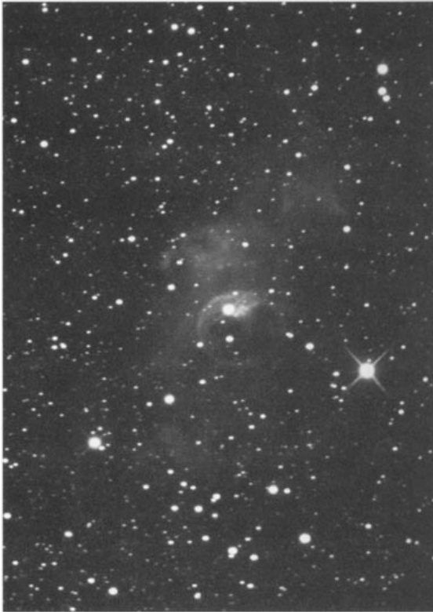

气泡星云 · Bubble Nebula (NGC 7635)
| 参数 / Parameter | 值 / Value |
|---|---|
| 类型 / Type | 发射星云 / Emission Nebula |
| 星座 / Constellation | 仙后座 / Cassiopeia |
| 赤经 / RA | 23h 20.7m |
| 赤纬 / Dec | +61° 12′ |
| 视星等 / Magnitude | 10.0 (O'Meara) |
| 视直径 / Apparent Diameter | 15′×8′ (星云/Nebula); 3′×3′ (气泡/Bubble) |
| 距离 / Distance | 7,100 光年 / Light-years |
| 发现者 / Discoverer | 威廉·赫歇尔 / William Herschel, 1787 |
历史发现 · Historical Discovery
Sailing close to the Cassiopeia-Cepheus border, about 6° west-northwest of Beta (β) Cassiopeiae (Caph), is a whimsical pairing of deep-sky objects: the illustrious 7th-magnitude open cluster M52 and, about ½° to its southwest, the dauntingly dim emission nebula NGC 7635 (Caldwell 11). Once included in the Catalogue of Galactic Planetary Nebulae by Lubos Perek and Lubos Kohoutek, the Bubble Nebula has since been reclassified as an emission nebula. It found its way into the first edition of Sky Atlas 2000.0 as a planetary nebula, but more modern atlases, such as the Millennium Star Atlas, Uranometria 2000.0, and the second edition of Sky Atlas 2000.0, portray it correctly as a diffuse emission nebula.
在仙后座与仙王座交界处附近航行，距离仙后座β星（策）西北偏西约6度处，有一对奇妙的深空天体组合：著名的7等疏散星团M52，以及在其西南方向约半度处、令人望而生畏的暗淡发射星云NGC 7635（考德维尔11）。这个气泡状星云曾被卢博斯·佩雷克和卢博斯·科霍特克编入《银河系行星状星云表》，但后来被重新归类为发射星云。它最初以行星状星云的身份被收录在《天空图鉴2000.0》第一版中，但在更现代的星图如《千禧年星图》《乌拉诺梅特里亚2000.0》以及《天空图鉴2000.0》第二版中，都已正确将其标注为弥漫发射星云。
W. HERSCHEL: [Observed 3 November 1787] A star of 9th magnitude with very faint nebulosity of small extent about it. (H IV-52)
威廉·赫歇尔：[1787年11月3日观测] 一颗9等星，周围环绕着范围极小且极为黯淡的星云状物质。（H IV-52）
GC: Very faint, a star of 9th magnitude involved a little excentric.
GC：非常暗弱，一颗9等星略微偏离中心。
1787年11月3日，威廉·赫歇尔用他那台精密的望远镜捕捉到了这个天体，在深邃的夜空中记录下一颗孤独的9等星，其周围环绕着极其微弱的星云状物质。这位恒星猎手的笔触如此克制，仿佛他当时根本无法预见，两百多年后的人类会借助太空望远镜，窥见这团星云的真正面貌——一个近乎完美的球形气泡，在浩瀚宇宙中静默地膨胀着。
完美球形的奥秘 · The Mystery of the Perfect Sphere
Detailed photographs of the Bubble help us understand the confusion surrounding this object. Red-light-sensitive plates taken with the Palomar Mountain 200-inch telescope show a magnificent loop of gas centered on, and seemingly blowing away from, a nondescript central star.
关于气泡星云的详细照片帮助我们理解围绕这个天体的困惑。帕洛玛山200英寸望远镜拍摄的红敏底片，展现出一个以一颗平凡中央恒星为中心、看似正被吹散开的壮丽气体环。
But the Bubble is not a planetary nebula; it is a hollow cavity in the HII region known as NGC 7635, and it was formed by radiation pressure streaming out from a hot blue central star (9th-magnitude SAO 20575, with a spectral type of O6.5). Hubble Space Telescope images of the Bubble suggest a celestial ballet of wind-swept veils dancing playfully around that 9th-magnitude sun.
但这个气泡并非行星状星云，而是位于HII区NGC 7635内的一个空心腔体，由一颗炽热蓝星（9等星SAO 20575，光谱型O6.5）辐射压形成的。哈勃太空望远镜拍摄的气泡图像中，那些被恒星风拂动的气纱宛如围绕这颗9等太阳嬉戏起舞的天界芭蕾。
A closer look at the images reveals dense knots embedded within the nebula's central cavity. The surfaces of these knots are being boiled away by the region's flood of intense ultraviolet radiation. They also have been shocked by the central star's 2,000-km-per-second wind.
仔细观察这些图像，可以发现星云中央空腔内嵌着致密的结块。这些结块表面正被该区域强烈的紫外线辐射所蒸发。同时它们还受到中央恒星每秒2000公里高速星风的冲击。

In dramatic contrast, high-density knots outside the sharp northern rim of the Bubble show no shock-wind effects. The rim thus marks the boundary where the stellar wind meets the surrounding interstellar medium, creating an almost perfectly spherical shock front visible across 7,100 light-years of intervening space.
相比之下，气泡北部锐利边缘外的高密度结块则未显现出激波风效应。该边缘标志着恒星风与周围星际介质相遇的位置，在这里形成了几乎完美的球形激波阵面，穿越7100光年的广袤空间被我们捕捉到。
观测体验 · Observing Experience
Under dark skies with a quality 10-12 inch telescope, the Bubble Nebula rewards patient observers with a ghostlike apparition. The central 9th-magnitude star sits not quite at the center of a faint, circular haze that demands averted vision to perceive. Like searching for a soap bubble suspended in the cosmic void, the bubble's edges flicker in and out of visibility as your eye catches the subtle contrast between the shell and the surrounding HII region.
在暗夜环境下，使用优质10-12英寸望远镜观测，气泡星云会给耐心的观测者带来如幽灵般的景象。中央那颗9等星并不完全位于一团模糊的圆形薄雾中心，需要用余光法才能感知它的存在。就像在宇宙虚空中寻找一颗悬浮的肥皂泡，气泡的边缘在你的视线捕捉到壳层与周围HII区域之间细微对比时，忽隐忽现地闪烁着。
With an OIII filter, the view transforms dramatically. The narrowband nebula filter darkens the starfield while allowing the emission line of doubly-ionized oxygen to pass through, revealing the bubble's shell with startling clarity. The perfect circular outline becomes unmistakable, and under exceptional conditions, you may even glimpse the slight asymmetry that gives this celestial soap bubble its character—blown by stellar winds at 2,000 kilometers per second, it is literally expanding as you watch.
配上OIII滤镜，景象会戏剧性地转变。这种窄带星云滤镜会暗化星空背景，同时让二次电离氧的发射线透过，以惊人的清晰度揭示气泡的外壳。完美的圆形轮廓变得无可置疑，在极佳的观测条件下，你甚至可能瞥见赋予这颗宇宙肥皂泡个性的轻微不对称——每秒2000
🔒 受限于篇幅，本文仅展示部分样章。O'Meara 先生完整的观测手记、实测数据及未公开的独家配图，请参阅原著双语典藏版。
👉 立即在闲鱼获取《DEEP-SKY COMPANIONS》中英双语高清典藏版